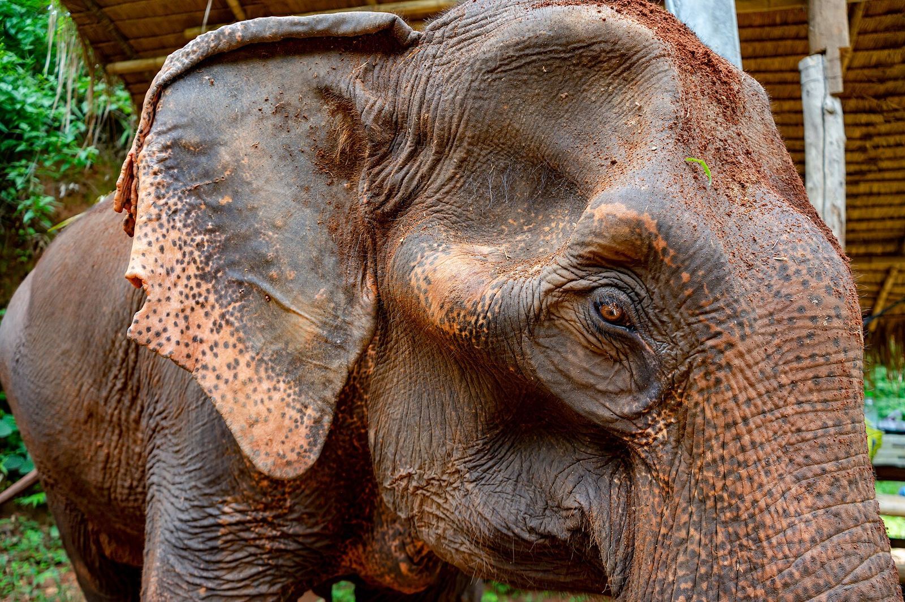

Zaino
Leggero, ma pronto a tutto
Templi dove si entra coperti, una giungla con zattere di bambù ed elefanti, una notte in homestay e isole dove a novembre piove forte. Le spunte si salvano su questo telefono.
0%0 / 0
Le voci segnate essenziale sono quelle senza cui un giorno del viaggio si complica davvero. Tutto il resto si trova anche lì, spesso a meno.
Il dress code dei templi
Coperti, scalzi, tranquilli
In alcuni templi coprire spalle e ginocchia è obbligatorio, e all'ingresso vi fermano. Conviene vestirsi così tutte le mattine in cui si visita qualcosa.
- ๑Spalle coperteNiente canottiere: a Chiang Mai lo chiedono espressamente. Una sciarpa o un pareo in borsa salvano la visita.
- ๒Ginocchia copertePantaloni lunghi o gonna lunga. Al Grand Palace i pantaloni lunghi sono obbligatori, e serve anche il passaporto.
- ๓Scarpe fuoriSi entra scalzi nelle sale dei templi. Scarpe facili da sfilare vi fanno risparmiare mezz'ora al giorno.
- ๔Sui rooftop, per gli uominiPantaloni lunghi e scarpe chiuse. In infradito non si sale.